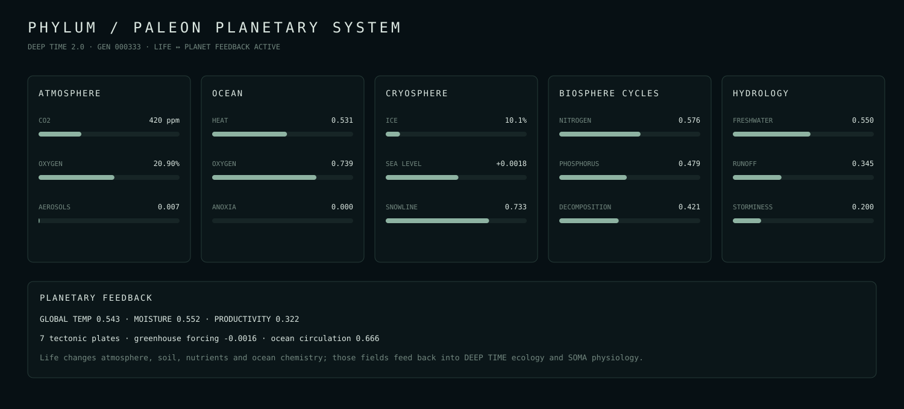

PHYLUM / PALEON
DEEP TIME 2.0 planetary systems dossier · generation 000332

Current planetary state
{
"generation": 332,
"temperature": 0.54299,
"moisture": 0.55247,
"productivity": 0.32236,
"atmosphere": {
"aerosols": 0.0071337,
"co2": 0.000419949,
"greenhouse_index": -0.001566,
"methane": 1.8715e-06,
"oxygen": 0.2090044,
"pressure": 1.0
},
"ocean": {
"acidity": 0.29999,
"anoxia": 0,
"circulation": 0.6661,
"current_phase": 0.865019,
"heat": 0.53074,
"nutrients": 0.58217,
"oxygen": 0.73931
},
"cryosphere": {
"ice_fraction": 0.10117,
"sea_level_anomaly": 0.00183,
"snowline": 0.7329
},
"cycles": {
"available_nitrogen": 0.57587,
"available_phosphorus": 0.47875,
"decomposition": 0.42147,
"living_carbon": 0.39882,
"ocean_carbon": 0.64,
"soil_carbon": 0.52
},
"hydrology": {
"drought_index": 0,
"evaporation": 0.50234,
"flood_index": 0,
"global_freshwater": 0.5503,
"runoff": 0.34493,
"storminess": 0.20033
},
"plates": 7
}